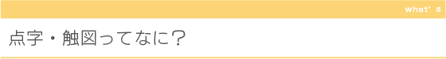
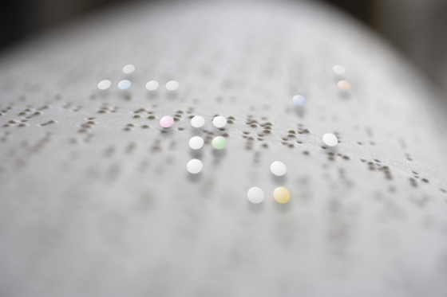

「点字」は視覚障がい者のための文字です。
１８３５年にフランス人で視覚障がい者でもあった、ルイ・ブライユによって創案されました。
６個の点の組み合わせで日本語はもちろんのこと、世界中の言語や数字、楽譜も表すことができます。
「触図」は、凹凸のある点や線・手触りの違いなどで、情報を伝え、地図やグラフ、絵本などに
使われています。
六点会では広く点字や触図を知っていただくため、ワークショップの開催や、
ユニバーサルデザインによるリーフレット制作など、啓蒙・啓発活動をおこなっています。
|

「点字」は視覚障がい者のための文字です。
１８３５年にフランス人で視覚障がい者でもあった、ルイ・ブライユによって創案されました。 ６個の点の組み合わせで日本語はもちろんのこと、世界中の言語や数字、楽譜も表すことができます。 「触図」は、凹凸のある点や線・手触りの違いなどで、情報を伝え、地図やグラフ、絵本などに 使われています。 六点会では広く点字や触図を知っていただくため、ワークショップの開催や、 ユニバーサルデザインによるリーフレット制作など、啓蒙・啓発活動をおこなっています。  
 |